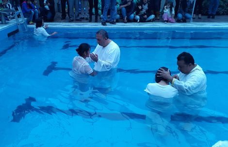
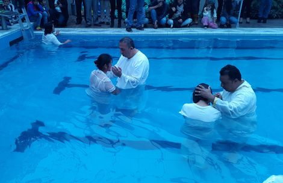
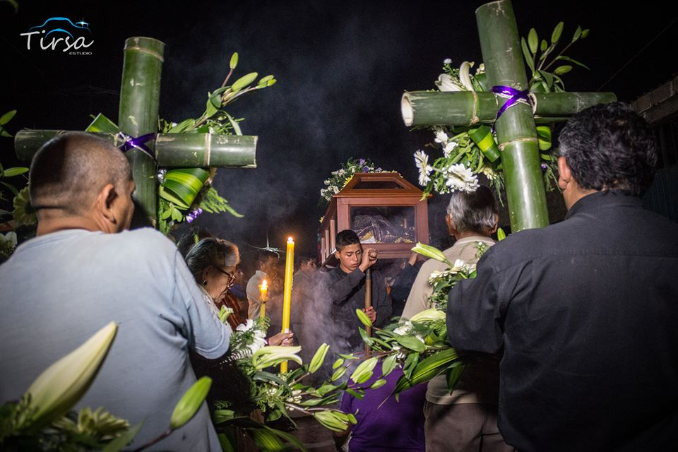
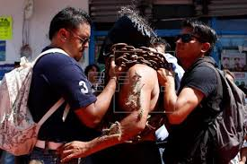
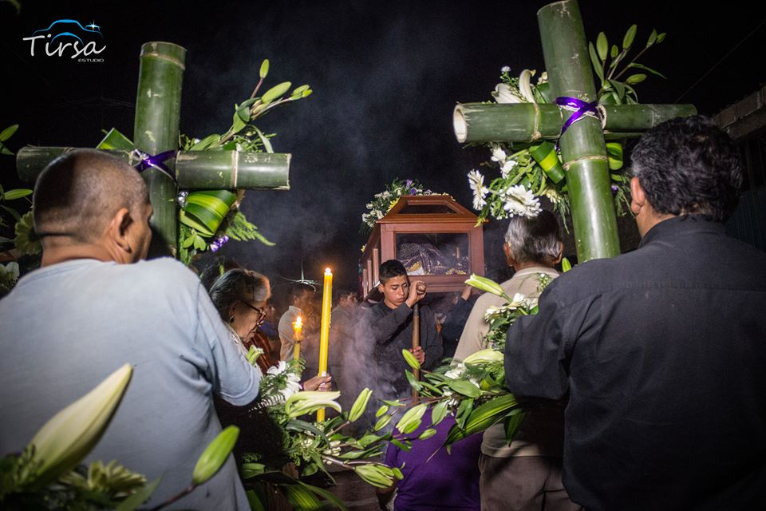
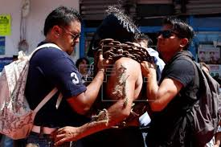
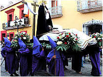
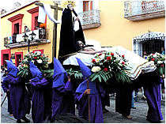

Celebracion de la Semana Santa
En que consiste la semana Santa
La Semana Santa es la conmemoración anual cristiana de la Pasión, Muerte y Resurrección de Jesús de Nazaret. Por eso, es un período de intensa actividad litúrgica dentro de las diversas confesiones cristianas. Da comienzo el Domingo de Ramos y finaliza el Domingo de Resurrección,1 aunque su celebración suele iniciarse en varios lugares el viernes anterior (Viernes de Dolores) y se considera parte de la misma el Domingo de Resurrección. La fecha de la celebración es variable (entre marzo y abril según el año) ya que depende del calendario lunar. La Semana Santa va precedida por la Cuaresma, que finaliza en la Semana de Pasión donde se celebra la eucaristía en el Jueves Santo, se conmemora la Crucifixión de Jesús el Viernes Santo y la Resurrección en la Vigilia Pascual durante la noche del Sábado Santo al Domingo de Resurrección
Dias de celebracion
Jueves Santo: El Jueves Santo se conmemora la Institución de la Eucaristía en la celebración de los Santos Oficios, al igual qu el lavatorio de pies que Jesus hizo a sus apostoles. Una vez que éstos han terminado,se conmemora la agonía y oración de Jesús en el huerto de los olivos (Getsemaní), la traición de Judas y el prendimiento de Jesús.

Viernes Santo: El viernes santo en la religion catolica es el dia en que se conmemora la muerte de Jesucristo;se celebra la "Liturgia de la Pasión del Señor" a media tarde del viernes, de ser posible cerca de las tres de la tarde, hora en la que se ha situado la muerte de Jesucristo en la cruz..Después de la segunda lectura, sin aclamación, se proclama el relato completo de la "Pasión según san Juan", en cuya lectura participan varias personas, leyéndose los papeles de Jesús (por el diácono o el sacerdote), el cronista por una persona y el Sanedrín (las personas que aparecen en el relato) por otro, siendo un seglar el que informa de lo que se va a ir realizando a lo largo de ésta celebración, al igual que en el día anterior. La homilía es algo más breve de lo habitual debido a lo extenso del Evangelio;El Sábado Santo es un día de luto. En la Iglesia Católica también se conmemora la Soledad de María después de llevar al sepulcro a Cristo, quedando en compañía del Apóstol Juan.
Sabado Santo (sabado de gloria): Es el tercer día del Triduo Pascual, que concluye con las primeras Vísperas del Domingo de Resurrección culminando así para los cristianos la Semana Santa. Tras conmemorar el día anterior la muerte de Cristo en la Cruz, se espera el momento de la Resurrección. Es la conmemoración de Jesús en el sepulcro y su Descenso al Abismo. Una vez ha anochecido, tiene lugar la principal celebración cristiana del año: la Vigilia Pascual.
Domingo de resurreccion: El Domingo de Resurrección o de Pascua es la fiesta más importante para todos los católicos, ya que con la Resurrección de Jesús es cuando adquiere sentido toda nuestra religión.Cristo triunfó sobre la muerte y con esto nos abrió las puertas del Cielo. En la Misa dominical recordamos de una manera especial esta gran alegría. Se enciende el Cirio Pascual que representa la luz de Cristo resucitado y que permanecerá prendido hasta el día de la Ascensión, cuando Jesús sube al Cielo.La Resurrección de Jesús es un hecho histórico, cuyas pruebas entre otras, son el sepulcro vacío y las numerosas apariciones de Jesucristo a sus apóstoles.Cuando celebramos la Resurrección de Cristo, estamos celebrando también nuestra propia liberación.Celebramos la derrota del pecado y de la muerte.En la resurrección encontramos la clave de la esperanza cristiana: si Jesús está vivo y está junto a nosotros, ¿qué podemos temer?, ¿qué nos puede preocupar?;Cualquier sufrimiento adquiere sentido con la Resurrección, pues podemos estar seguros de que, después de una corta vida en la tierra, si hemos sido fieles, llegaremos a una vida nueva y eterna, en la que gozaremos de Dios para siempre.
Como celebran la semana santa otras religiones..
Catolica: La Semana Mayor para los católicos es la época en la que se recuerda y celebra los hechos más relevantes en la vida de Jesús de Nazaret (la Pasión, Muerte y Resurrección), comenzando con el llamado Domingo de Ramos y finalizando el Domingo de Resurrección o también llamado de Pascua.
Testigos de jehova: No celebran la semana santa, simplemente hacen la conmemoracion de la muerte de nuestro señor Jesucristo, despues de la puesta de sol siguiendo el mandato biblico que el dejo.
 

Evagelicos: con obras teatrales, cantos y alegria celebran los cristianos evangelicos la semana santa, un importante grupo que no adoran imagenes, pues creen en jesus murio ,pero tambien resucito y por eso basan su fe en un Dios vivo.
 



 
